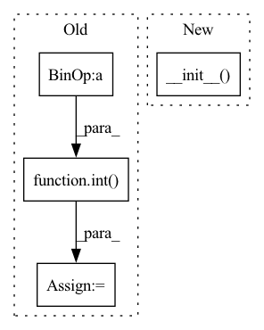

Pattern ID :24816
Before Change
self.transcripts = transcripts
self.sample_rate = sample_rate
self.num_mel_bins = num_mel_bins
self.n_fft = int( round(sample_rate * 0.001 * frame_length_ms))
self.hop_length = int(round(sample_rate * 0.001 * frame_shift_ms))
def get_text(self, index):
return torch.IntTensor(text_to_sequence(self.transcripts[index], "english_cleaner"))After Change
frame_length_ms: float = 50,
frame_shift_ms: float = 12.5
):
super(TextMelDataset, self).__init__( feature_extract_by, sample_rate, num_mel_bins, frame_length_ms, frame_shift_ms)
self.dataset_path = dataset_path
self.audio_paths = audio_paths
self.transcripts = transcripts
In pattern: SUPERPATTERN
Frequency: 3
Non-data size: 4
Instances Fragment ID: 76667943
Project Name: sooftware/tacotron2
Commit Name: b0baed6e25e5fa9d94fb4fe04754a826a01bafa9
Time: 2020-10-04
Author: sh951011@gmail.com
File Name: tacotron2/data/data_loader.py
M Class Name: TextMelDataset
N Class Name: TextMelDataset
M Method Name: __init__(9)
N Method Name: __init__(8)
M Parent Class: Dataset,MelSpectrogramParser
N Parent Class: object
M File Name: tacotron2/data/data_loader.py
N File Name: tacotron2/data/data_loader.py
M Start Line: 26
M End Line: 29
N Start Line: 19
N End Line: 25
Before Change
raise AssertionError("Make sure "loss_type" in ["BPR", "CE"]!")
// we only need compute the loss at the masked position
self.mask_item_length = int( self.mask_ratio * self.max_item_list_length)
self.initializer_range = config["initializer_range"]
self.apply(self._init_weights)
def _init_weights(self, module):After Change
input_type = InputType.PAIRWISE
def __init__(self, config, dataset):
super(BERT4Rec, self).__init__( config, dataset)
// load parameters info
self.hidden_size = config["hidden_size"]
self.embedding_size = config["embedding_size"] Fragment ID: 76667942
Project Name: rucaibox/recbole
Commit Name: 1714ed39db89b102bc46fc23155f92de0d8996bd
Time: 2020-10-15
Author: hui.wang@ruc.edu.cn
File Name: recbox/model/sequential_recommender/bert4rec.py
M Class Name: BERT4Rec
N Class Name: BERT4Rec
M Method Name: __init__(3)
N Method Name: __init__(3)
M Parent Class: SequentialRecommender
N Parent Class: SequentialRecommender
M File Name: recbox/model/sequential_recommender/bert4rec.py
N File Name: recbox/model/sequential_recommender/bert4rec.py
M Start Line: 35
M End Line: 63
N Start Line: 35
N End Line: 57
Before Change
Initialize the MzEncoder
super().__init__()
n_sin = int( dim_model / 2)
n_cos = dim_model - n_sin
scale = max_wavelength / (2 * np.pi)
sin_term = scale ** (torch.arange(0, n_sin).float() / (n_sin - 1))
cos_term = scale ** (torch.arange(0, n_cos).float() / (n_cos - 1))
self.register_buffer("sin_term", sin_term)
self.register_buffer("cos_term", cos_term)
After Change
def __init__(self, dim_model, min_wavelength=1, max_wavelength=10000):
Initialize the MzEncoder
super().__init__(
dim_model=dim_model,
min_wavelength=min_wavelength,
max_wavelength=max_wavelength,
)
def forward(self, X):
Encode positions in a sequence.
Fragment ID: 76667947
Project Name: wfondrie/depthcharge
Commit Name: 263bbd6e1db05f1afbb5b8ea759129c467667026
Time: 2023-03-23
Author: wfondrie@talus.bio
File Name: depthcharge/components/encoders.py
M Class Name: PositionalEncoder
N Class Name: PositionalEncoder
M Method Name: __init__(4)
N Method Name: __init__(3)
M Parent Class: FloatEncoder
N Parent Class: torch.nn.Module
M File Name: depthcharge/components/encoders.py
N File Name: depthcharge/components/encoders.py
M Start Line: 145
M End Line: 154
N Start Line: 175
N End Line: 181